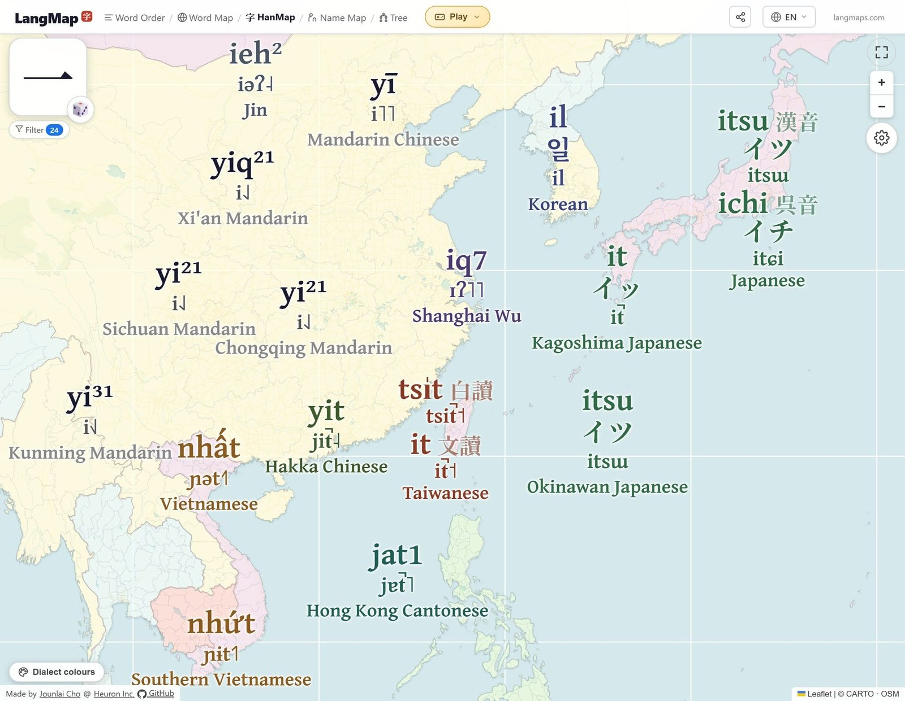

Sinosphere · · revised · Facebook post
One Stroke, Many Sounds: 一
- 一, a single horizontal stroke, is the simplest character there is.
- Across the Sinosphere it is read yī, jat1, it, yit, iq, ichi, itsu, il and nhất.
- The differences are not random; each keeps a different piece of one older pronunciation.

Contents
One stroke, many sounds
The simplest character there is, just one horizontal stroke, and the Sinosphere reads it in strikingly different ways.
一
Mandarin: yī
Cantonese: jat1
Southern Min (Taiwanese): it, and in everyday speech tsi̍t
Hakka: yit
Shanghainese: iq
Japanese: ichi or itsu
Korean: 일 (il)
Vietnamese: nhất
These are not simply unrelated words that happen to mean "one."
But they are not all borrowings either.
Mandarin, Cantonese, Min, Hakka and Wu preserve different descendants of the same inherited Chinese word.
Japanese, Korean and Vietnamese preserve Chinese readings borrowed and adapted in different historical periods. Each borrowed reading is a fossil of the Chinese being spoken when it was taken over.
The final -t that will not go away
Middle Chinese 一 is reconstructed roughly as *ʔjit (the Han Map gives the Tang-period form ʔjiɪt). Baxter and Sagart reconstruct Old Chinese *ʔi[t].
That final -t is still surprisingly visible.
Cantonese: jat1
Southern Min: it
Hakka: yit
Vietnamese: nhất
Shanghainese iq keeps a trace of it too: the q marks a short syllable cut off by a glottal stop, all that is left of the old consonant.
Korean turned it into -l: il.
Japanese adapted it by adding a vowel: ichi and itsu.
Mandarin went much further, losing the final consonant entirely and leaving yī. By the time of the 中原音韻 Zhongyuan Yinyun rhyme book of 1324, the old -p, -t, -k contrast had already collapsed in the northern speech that became Mandarin.
So the differences are not random. They preserve different pieces of an older pronunciation, filtered through centuries of separate sound change and different routes of transmission.
Layers inside one language
Some languages keep more than one layer at once.
Japanese has two Sino-Japanese readings for 一. Ichi is Go-on (呉音), the older layer that arrived by way of the Korean Peninsula in the 5th–6th centuries. Itsu is Kan-on (漢音), brought back from Tang Chang'an by Japanese embassies in the 7th–9th centuries. Japanese counting mostly uses Go-on, which is why the number is ichi.
Taiwanese has it and tsi̍t. It is the literary reading of 一, used in learned words such as tē-it, "first place." The everyday tsi̍t, as in tsi̍t ê lâng, "one person," is often analysed as a separate Min word for "one," traditionally linked to the character 蜀, that is simply written with 一.
And even Mandarin has a second way to say it. Read a phone number aloud and the 1 comes out yāo, not yī. That is a substitution, not a reading: the character is 幺, "the smallest," chosen because over a noisy line yī is easily confused with qī, "seven."
From one to ten
Line up the numerals from one to ten and the patterns become even clearer.
| 1 | 2 | 3 | 4 | 5 | 6 | 7 | 8 | 9 | 10 | |
|---|---|---|---|---|---|---|---|---|---|---|
| Mandarin | yī | èr | sān | sì | wǔ | liù | qī | bā | jiǔ | shí |
| Korean | il | i | sam | sa | o | yuk | chil | pal | gu | sip |
| Japanese (Go-on) | ichi | ni | san | shi | go | roku | shichi | hachi | ku | jū |
| Vietnamese | nhất | nhị | tam | tứ | ngũ | lục | thất | bát | cửu | thập |
Old final consonants appear and disappear in systematic ways. Where Mandarin has liù, qī, bā and shí, the others still show a final consonant or its echo: Korean yuk, chil, pal, sip; Vietnamese lục, thất, bát, thập.
And the famous associations around the number four come into view. Japanese 四 shi sounds exactly like 死 shi, "death," and Korean sa is also a homophone of "death," which is why the fourth floor is sometimes skipped or labelled "F."
One shared character
Cantonese and Sino-Vietnamese line up especially well: Cantonese inherited the final stops directly, and Sino-Vietnamese readings were borrowed mainly from late Tang Chinese, so both kept what Middle Chinese had.
The Han Map also shows the regional echoes. Southern Vietnamese says nhứt, Okinawan has itsu, and Kagoshima Japanese clips the word to it.
One shared character.
Many sounds, each carrying a different piece of its history.